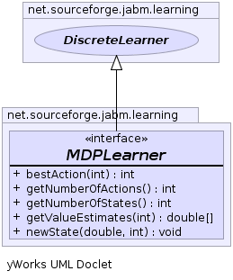

net.sourceforge.jabm.learning
Interface MDPLearner
- All Superinterfaces:
- DiscreteLearner, Learner
- All Known Implementing Classes:
- QLearner
public interface MDPLearner
- extends DiscreteLearner
Classes implementing this interface implement learning algorithms for Markoff
descision processes (MDPs).
-
-

newState
void newState(double reward,
int newState)
- The call-back after performing an action.
- Parameters:
reward - The reward received from taking the most recently-selected
action.newState - The new state encountered after taking the most
recently-selected action.
getValueEstimates
double[] getValueEstimates(int state)
- Parameters:
state - The current state of the MDP.
- Returns:
- An array representing the Q values indexed by action.
bestAction
int bestAction(int state)
getNumberOfActions
int getNumberOfActions()
- Description copied from interface:
DiscreteLearner
- Get the number of different possible actions this learner can choose from
when it performs an action.
- Specified by:
getNumberOfActions in interface DiscreteLearner
- Returns:
- An integer value representing the number of actions available.
getNumberOfStates
int getNumberOfStates()